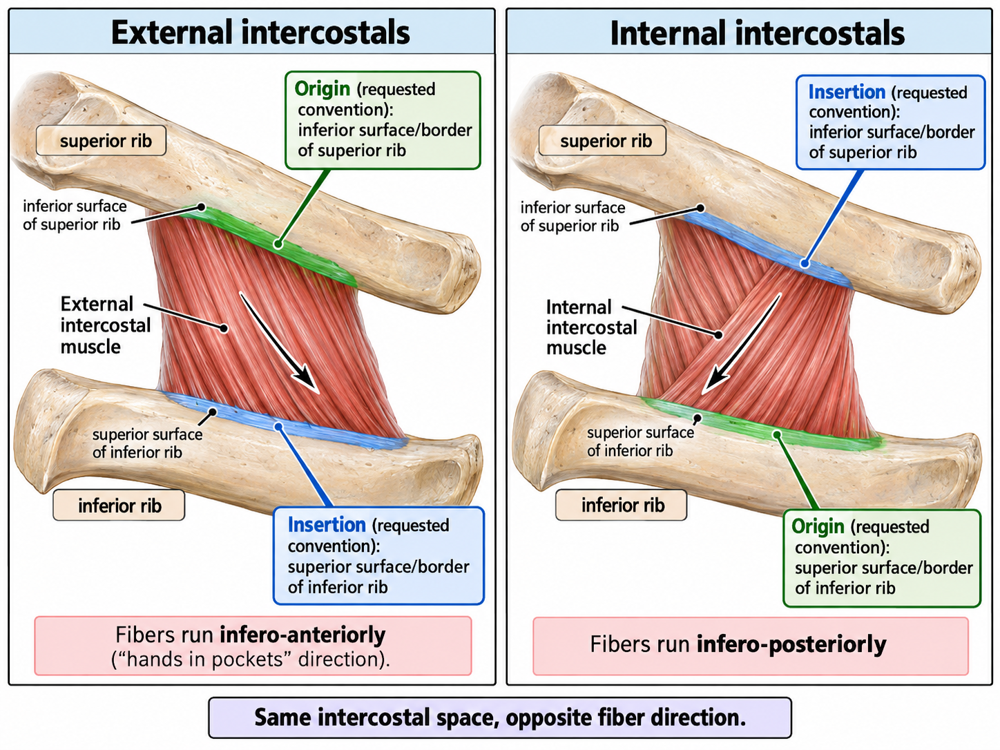

UPLOAD #1 • 2026-10-18
Intercostal Muscle Attachments Diagram

Side-by-side anatomy illustration demonstrating the origin, insertion, and fiber direction of the external and internal intercostal muscles between two adjacent ribs.
UPLOAD #1 • 2026-10-18

Side-by-side anatomy illustration demonstrating the origin, insertion, and fiber direction of the external and internal intercostal muscles between two adjacent ribs.